Origin CBM proof of concept · progress
What has been built against the PoC offer: a wellbore model inside tNavigator, an asset-scale gas and water network, an AI agent that builds and calibrates models, and the UNSW proxy research track.
Rock Flow Dynamics · tNavigator 26.2 · synthetic demo models · 28 September 2026
The PoC offer and where we are
| Offer | What is built | Status |
|---|---|---|
| TC2 · wellbore pressure gradient | Annulus water model coupled to the simulator and the network every time step | Working, 7 synthetic wells |
| TC3 · integrated asset modelling | Field gas target and well balancing on the integrated model; water held to plant capacity | Working, synthetic |
| TC4 · asset-scale scalability study | Scripted IPR networks of 7, 70, 700 and 7,000 wells, IPRs tied to the integrated model | Working to 700; 7,000 runs |
| AI layer (section 8) | An agent builds an integrated model and calibrates a well model through the tNavigator MCP server | Demonstrated |
| TC6 · proxy modelling (UNSW) | Graph neural network proof of concept; control-aware proxy proposal | Research started |
| TC1 · permeability closure + AHM, TC5 · hydraulic fracture | Need Origin data (TC1) and the section owner (TC5) | Not started |
Origin CBM PoC · tNavigator · RFD · all results on synthetic demo models
1 · Wellbore (TC2)
Water above the pump, aerated by the rising gas (drift flux, Shi et al. 2005), sets the pressure on the coal.
A PCP on a variable-speed drive holds 50 ft of water. Fast gas carries water to the surface (Turner, load-corrected).
Each step a Python script writes the well's VFP table from the annulus water. Tank and simulator agree on coal-face pressure to a median 0.14 psi over two years.
Well diagram: RFD tank-model slides · all results on synthetic demo models · equations in the backup
1 · Wellbore · what it shows
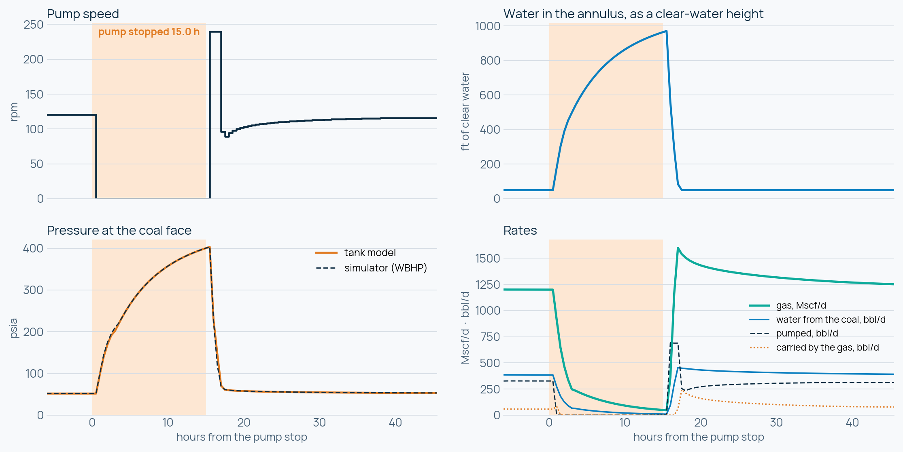
50 → 970 ft
water above the pump; coal face 52 → 403 psia; gas 1,200 → under 50 Mscf/d
~2 h
after the restart the level is back at 50 ft; the gas flushes to about 1,600 and settles near 1,250
Tank model and simulator agree on the coal-face pressure through the stop and the restart.
Synthetic well W3, day 95 of a two-year run with random pump stops · tank model · tNavigator
1 · Integrated model (TC3)
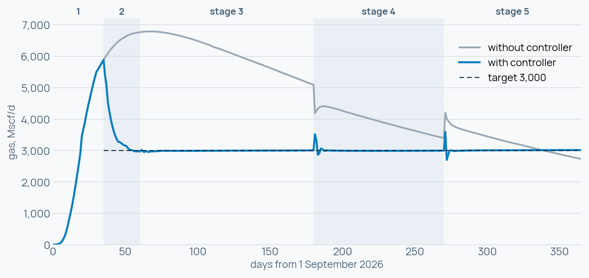
0.3%
mean deviation from 3,000 Mscf/d over the controlled stages
11 → 1.25
highest to lowest well rate after balancing
When three wells shut, the rest take their share within days. The network solved on every day of the year.
Seven synthetic CBM wells with the tank model, one year · Network Designer · tNavigator
2 · Asset-scale network (TC4)
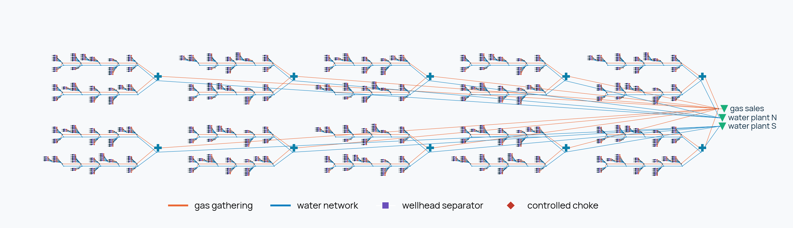
| Wells | Pads | Compressors | Gas target, MMscf/d | Time per date | Full run, 1 CPU |
|---|---|---|---|---|---|
| 70 | 20 | 1 | 30 | 0.6 s | 99 s |
| 700 | 200 | 10 | 300 | 7 s | 20 min |
| 7,000 | 2,000 | 100 | 3,000 | 96 s | ~4.6 h |
| 70,000 | 20,000 | 1,000 | 30,000 | ~20 min | ~2-3 days (estimate) |
Every run: 173 calculation dates over one year, 1 Sep 2026 to 1 Sep 2027 (daily around events, weekly to monthly between them). 7,000 wells: 107 of 173 dates in 2.8 h, the rest extrapolated. 70,000 wells: extrapolated from the growth 70 to 700 to 7,000, not run.
RFD demo networks · IPR wells in Python objects · Network Designer · tNavigator 26.2 · 700-well scheme after the water extension
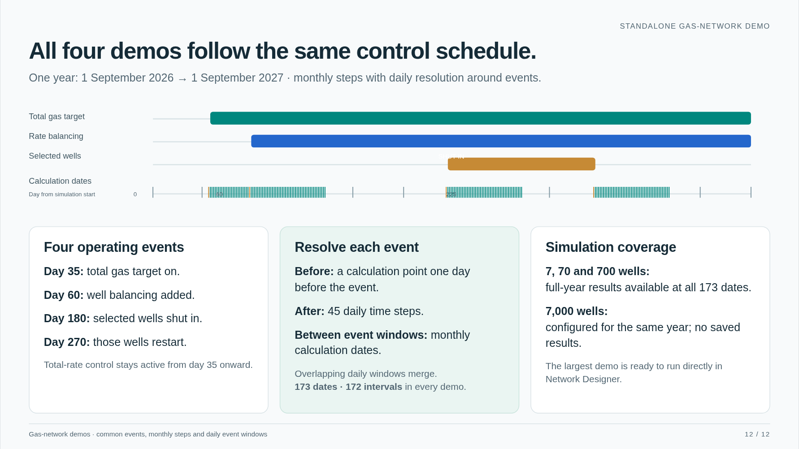
2 · Complex wells through simple IPRs
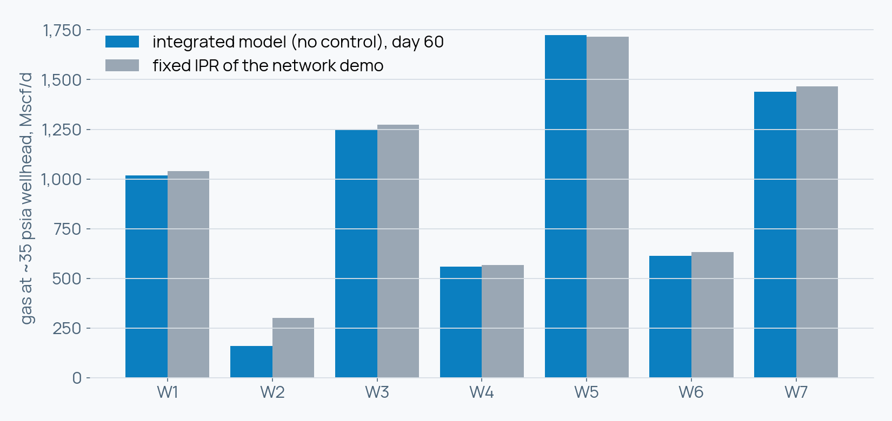
Each IPR, q = C (P² − p²), is set from the integrated model: within 1-3% at peak for six of seven well types.
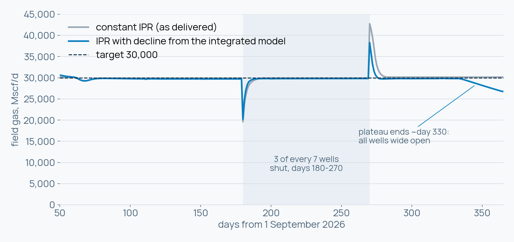
Under control both hold the 30,000 target. With the decline added as P(t) the plateau ends near day 330, as in the integrated model.
IPR in a Python object per well · decline P(t) from the integrated model's free run · 70-well network, target 30,000 Mscf/d
2 · Water
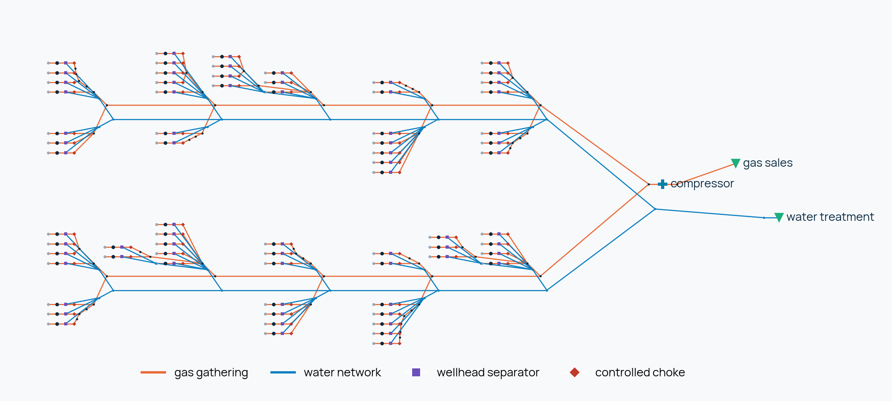
Each well's water follows its own water-to-gas ratio from the integrated model, high during dewatering and falling with time.
A separator on every wellhead sends the water through pad and collector lines, laid along the gas routes, to a treatment plant.
The scheme is laid out by collector line and zone, so the network reads on screen.
70-well network after the water extension · 70 wellhead separators · 1 treatment plant (700 wells: 700 separators, 2 plants)
2 · Water-limited optimisation
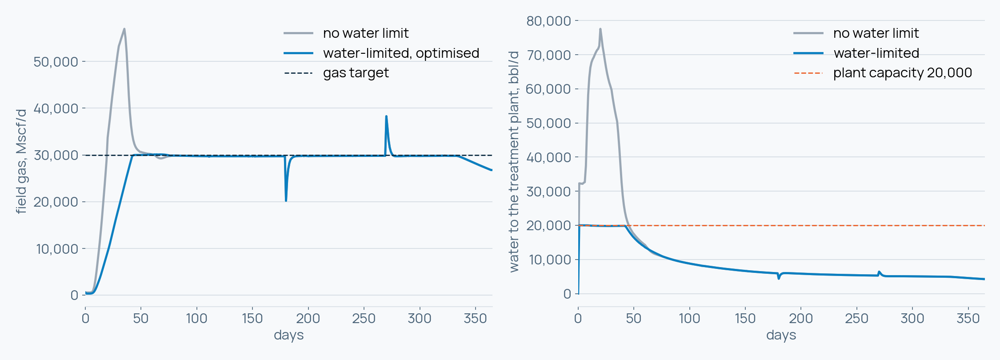
20,000 bbl/d plant limit held from day 1 to day 45; unlimited peak 77,600
Day 45: gas on the 30,000 target, water just under the limit
Cost: 1,047 vs 1,794 MMscf gas in the first 60 days
Same at 700 wells with two plants (100,000 and 70,000 bbl/d): both limits held within 0.3%, target reached on day 49.
70-well network with decline and water · one Network Designer Python action · 366 daily steps
3 · AI layer · RFD demo
Request by request the agent creates PVT, relative permeability, equilibrium and two wells, then Well Designer projects and a Network Designer network.
It links them into one integrated case and runs it to 2028.
Claude Code driving tNavigator through the local MCP server. Silent clip, 4 min 20 s.
Demo 1 · IPS model · tNavigator 26.2 · RFD
3 · AI layer · RFD demo
From a well report the agent builds the well and its fluid, screens the tests against two correlations and drops the one that fails.
±1.5 bar
matched bottom-hole pressure; temperature within 0.13 °C
Silent clip, 2 min 47 s.
Demo 2 · well model · tNavigator 26.2 · RFD
4 · Proxy research (TC6) · UNSW
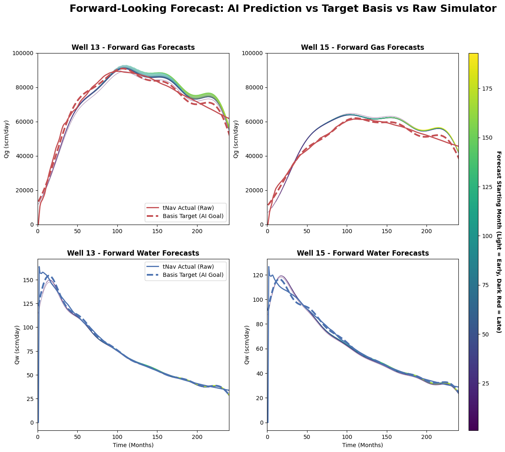
Wells are nodes, neighbours are edges. Each well's gas and water profile is a sum of smooth basis functions.
2 s
forecast after about 2 minutes of training
Preliminary: 12-well test model, 240 months, two wells held out, no tuning yet.
UNSW MUTRIS group, tNav project update, 16 September 2026 · figure from their slides
4 · Proxy research · how it works
1
Node = a well: BHP, permeability, depth. Edge = a neighbour: mean permeability, porosity, distance. Static inputs from the tNavigator model, plus each well's production history.
2
Graph convolutions pass information between neighbouring wells, so interference is learned from the layout.
3
Output: weights of 8 gas and 12 water basis functions (right). Their sum is a smooth 240-month gas and water profile.
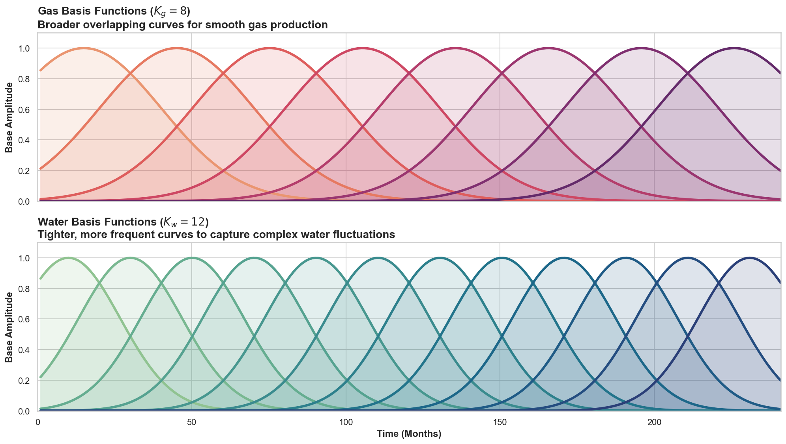
Trained on tNavigator runs: 12 wells, 240 months, 2 wells held out for validation. Training about 2 minutes, a forecast in 2 seconds.
UNSW MUTRIS group, tNav project update, 16 September 2026 · basis-function figure from their slides
4 · UNSW proposal
At low gathering pressure a choke change moves the whole network at once and the coal later. A coupled run is too slow to try many settings.
A graph network replaces the reservoir grid: wells are nodes, edges join wells whose drainage areas touch. The surface network stays in tNavigator.
Does it handle events it has not seen, like a pump stop? Does it run on a field where wells were added or shut in, without retraining?
It receives the planned controls with the history and forecasts gas and water per well for the coming months. It is trained on runs with varied control schedules, the kind our integrated models produce.
UNSW-RFD problem statement: a control-aware AI-based subsurface proxy for coupled reservoir and surface-network simulation in CBM
One chain
WELL
Annulus water and the pump set the coal-face pressure
IPR
Its rates and decline go into simple well curves
NETWORK
Thousands of wells, gas and water, limits and control
PROXY + AI
Faster forecasts; agents build and calibrate
Next, with Origin data
Data stress test and pilot sector · BHP reconstruction on gauge wells · Gangi closure with ensemble history matching · Origin network topology at full scale · UNSW proxy trained on our integrated runs
Backup
The annulus tank model (water inventory, drift flux, pump, carryover, delays, VFP coupling) and the gas-network demo (IPR wells, compressors, controller).
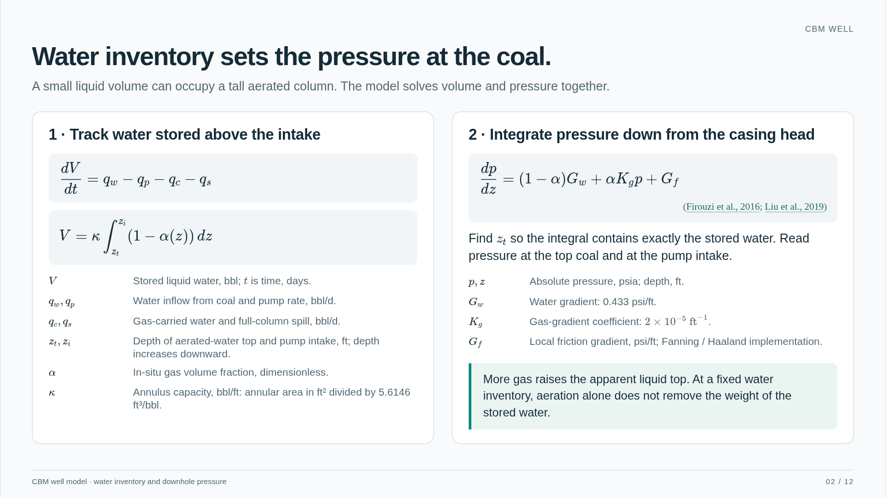
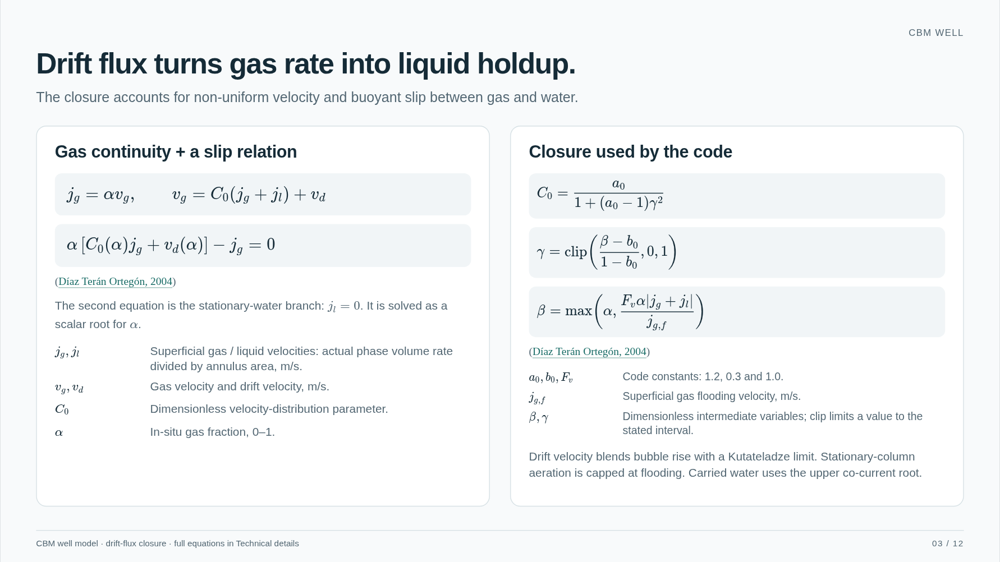
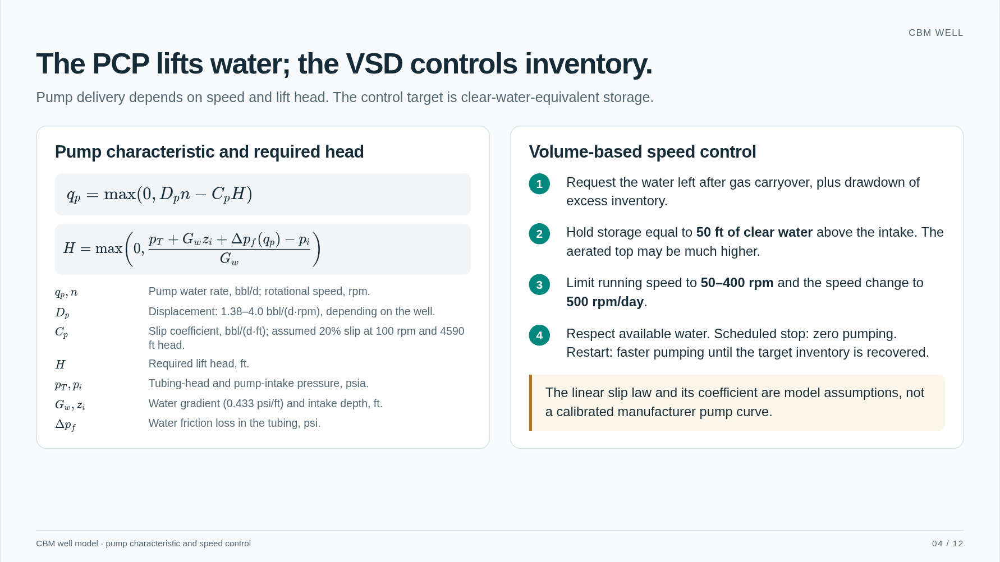
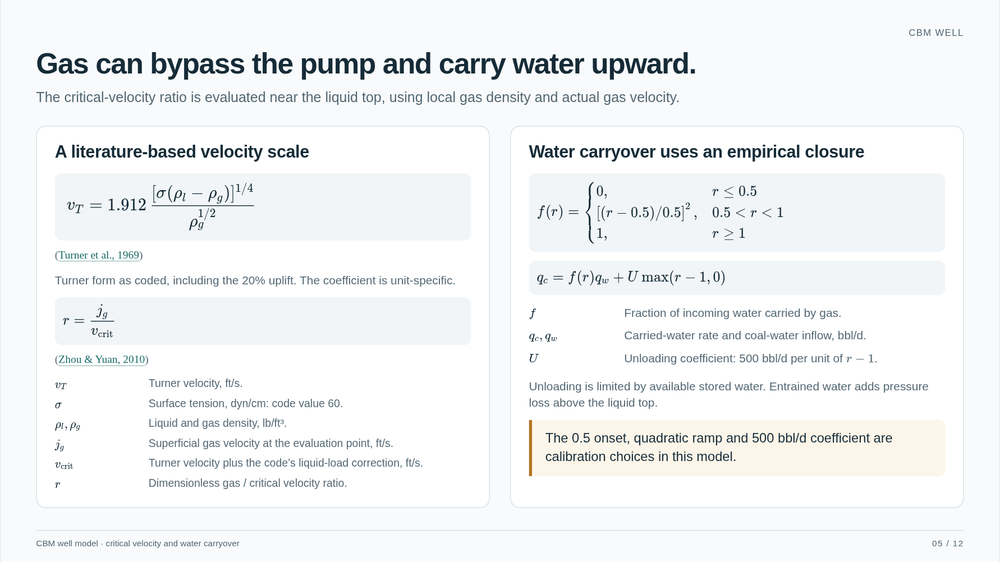
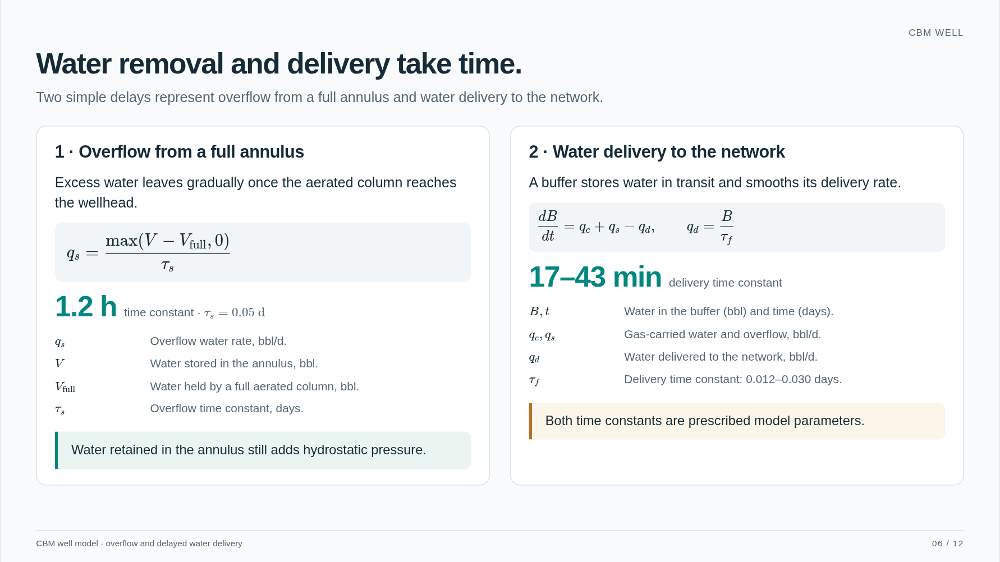
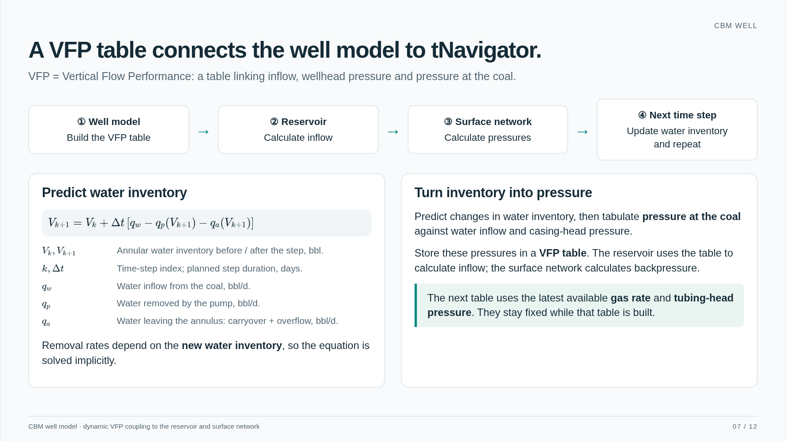
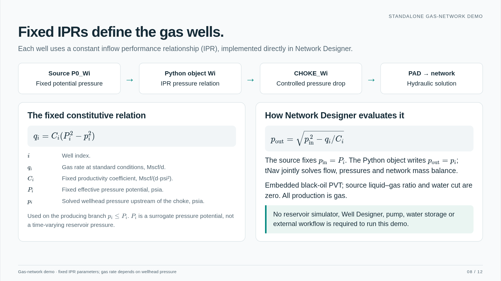
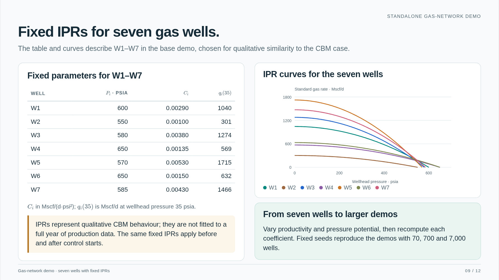
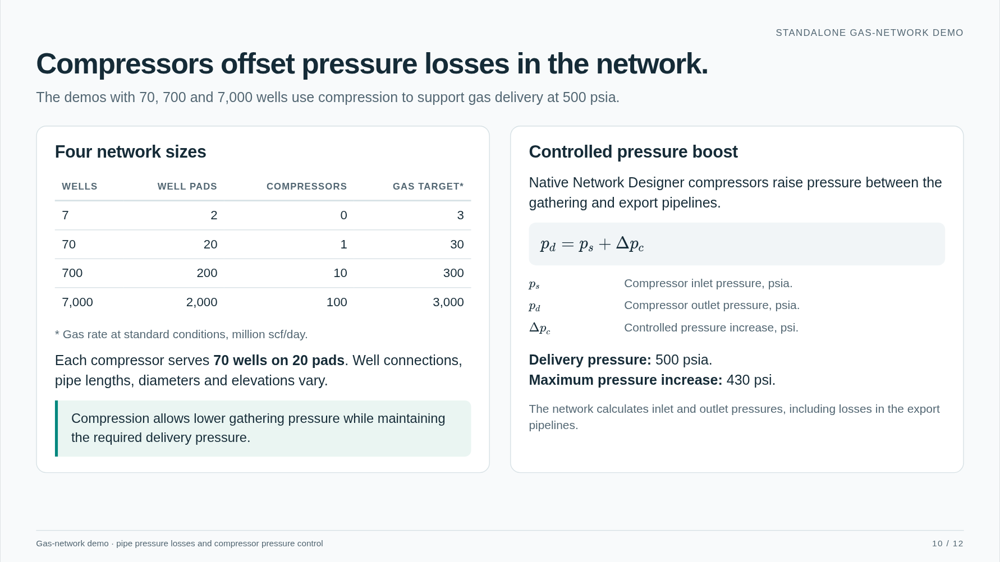
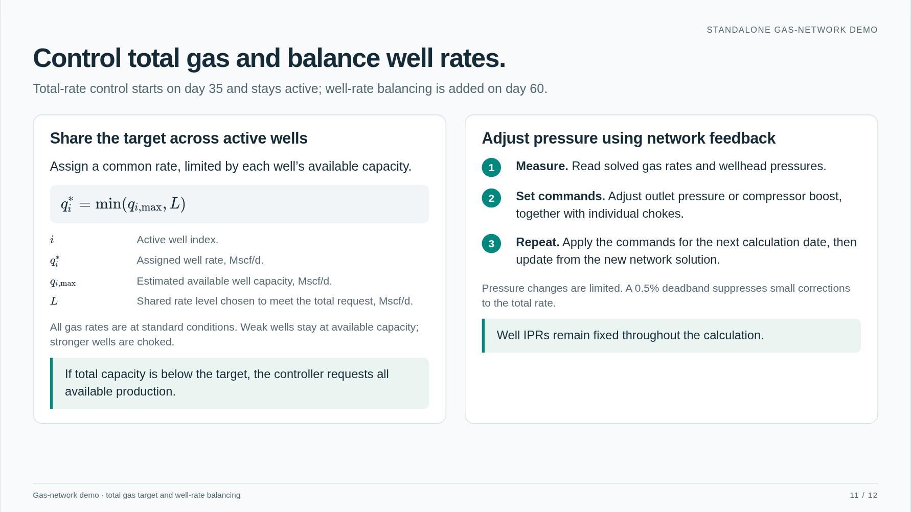